Non sempre è possibile utilizzare degli algoritmi per risolvere un problema.
Per vari motivi:
Alcuni esempi sono: riconoscimento facciale, filtro anti-spam.
In questi casi gli algoritmi (sequenza finita di passi che portano ad un risultato determinato in un tempo finito) non funzionano ed è quindi preferibile fornire una soluzione "imperfetta".
In apprendimento automatico si studiano i metodi per trasformare l'informazione empirica (dati del problema) in conoscenza.
Questo approccio è diventato possibile grazie al fatto che Internet ha reso disponibili molti dati.
Perché il machine leargning funzioni deve esserci un processo (stocastico o deterministico) che spiega i dati che osserviamo, in modo da riuscire a costruire un'approssimazione di tale processo che può anche risultare imperfetta dal momento che il processo che si vuole approssimare non è noto.
Stocastico: random a probabilità
L'obiettivo finale del machine learning è quello di definire dei criteri da ottimizzare in modo che sia possibile andare a migliorare dei modelli definiti su certi parametri.
Questi modelli possono essere:
Esempi applicativi:
(Kaggle)[https://www.kaggle.com/], sito che offre sfide con problemi di machine learing sponsorizzati da grandi compagnie.
Proposta di un progetto di gruppo (opzionale): affrontare uno dei problemi proposti da Kraggle per ottenere un bonus sul voto finale.
_Notazione:
X --> {-1,+1} (h di teta, funzione che mappa un dato valore in -1 o +1 (oppure 0 o 1) la funzione h è sempre parametrica, in qunato i parametri rappresentano l'apprendimento (teta Ø));h(Ø): X --> Y con Y che prende come valori un enumeratore o un intervallo di numeri 1..k;h(Ø): X --> Realeh(Ø): XxY --> Reale dati elementi del prodotto cartesiano tra X (esempio) e Y (etichetta) associa un punteggio espresso da un numero reale. Una funzione che valuta la coppia (x,y) con x valore e y classificazione.h(Ø): X --> [0,1] funzione che dato un'esempio mi calcola il fattore di rischio come numero reale da 0 a 1.h(Ø): X --> {1,..,k} funzione che ad un esempio associa una valutazione.P(Y|X).Evento: qualcosa che può essere o vero o falso.
La probabilità che si verifichi un'evento è un numero compreso tra 0 e 1, 0 <= P(E) <= 1. Questo numero può essere calcolato usando la frequenza con la quale si verifica l'evento.
Dato un insieme di eventi E_i mutuamente esclusivi tra loro. La probabilità dell'unione di tutti gli eventi è la somma delle probabilità dei singoli eventi.
La probabilità che si verifichi un evento o il suo complementare è 1. (sempre se gli eventi sono mutuamente esclusivi).
La probabilità dell'unione di due eventi non esclusivi è data dalla probabilità che si verifichi uno o l'altro, meno la probabilità che si verifichino entrambi contemporaneamente.
P(E unito F) = P(E)+P(F)+P(E intersecato F)
Probabilità condizionale: probabilità che l'evento E accada sapendo che si è verificato l'evento F P(E|F).
L'evento E è indipendente da F se P(E|F) = P(E).
P(E intersecato F) = P(E|F)*P(F) = P(F|E)*P(E)
Formula di Bayes
P(F|E) = [P(E|F)P(F)] / P(E)
Deriva dalla probabilità condizionata, sarà utile nella classificazioni di tipo bayesiano (non sono sicuro che sia scritto giusto).
Dato un insieme di eventi F_i, tra loro esclusivi ed esasutivi (gli Fi coprono tutti i possibili esiti, la propabilità dell'unione di tutti gli F_i è 1).
Allora E = unione su i (E intersecato F_i), la probabilità di E è quindi uguale alla sommatoria della probabilità di tutte le intersezioni.
Il tutto per arrivare a:
P(F_i | E) = [P(E | F_i)P(F_i)] / sommatoria su j ( P(E|F_j)P(F_j))
Valore atteso: detto anche media, con X e Y variabili aleatorie.
E[X] = sommatoria su i (x_i * P(x_i))
E[aX + b] = aE[X] + b
E[X + Y] = E[X] + E[Y]
E[g(X)] = sommatoria su i (g(x_i) * P(x_i))
E[X^n] = sommatoria su i ((x_i)^n * P(x_i)) detto anche n-esimo momento
Varianza: quanto varia il valore ottenuto attorno alla media dei vari esperimenti.
sigma^2 = VAR(X) = E[ (X-mu)^2 ] dove mu è il valore atteso. = E[X^2] - mu^2.
Deviazione standard: o scarto quadratico medio, è la radice quadrata della varianza, ed è la media di quando ci si discosta dal valore attesso.
Esito di un esperimento che può essere positivo o negativo.
P(X = i) = p se i=1
1-p se i=0
La probabilatà di avere i successi su N esperimenti è uguale a
P(X=i) = (N su i)pi(1-p)N-i
Il valore atteso di questa variabile è dato da N*p mentre la varianza è N*p*(1-p).
Assume che in un intervallo [a,b] tutti i punti hanno la stessa probabilità.
P(X = x) = 1 / (b-a) con
a <= x <= bP(X = x) = 0 altrimenti
Il valore atteso di X (E[X]) è uguale a (a+b)/2
La distribuzione si concentra in un certo valore medio mu ed ha la forma a campana.
N(mu, sigma2)
P(x) = [1 / sigma(√2Pi)]*e(x-mu)^2 / 2sigma^2
<!-- https://it.wikipedia.org/wiki/Distribuzione_normale -->
M € Rm x d
Somma di due matrici: le matrici A e B devono avere la stessa dimensione, e la matrice somma ha come elementi la somma degli elementi delle matrici.
C = [A + B]i,j = [a]i,j + [b]i,j
Per fare il prodotto di due matrici è necessario che siano di dimensioni compatibili.
A € Rm x d B € Rd x k L'emento (i,j) della matrice C = A * B è uguale alla somma del prodotto riga i-esima di a e colonna j-esima di B
La matrice trasposta di una matriche è la stessa matrice "ribaltata" sulla diagonale.
(AB)T = BTAT
Un vettore è una matrice di una sola colonna.
Il prodotto scalare tra due vettori è la sommatoria del prodotti dei vari elementi del prodotto.
Due vettori si dicono ortogonali quando il loro prodotto scalare è 0.
Due vettori si dicono correlati se il loro prodotto scalare è maggiore di 0, in caso contrario si dicono scorrelati.
La lunghezza di un vettore (norma2, distanza eculidea) è definita come la radice quadrata della sommatoria dei vari elementi del vettore, eleveati al quadrato.
Allo stesso modo il quadrato della lunghezza è la sommatoria dei quadrati degli elementi del vettore.
Il prodotto scalare tra due vettori è anche uguale al prodotto delle lunghezza dei due vettori, moltiplicato anche per il coseno dell'angolo tra i due vettori.
La distanza tra due vettori è la norma della differenza tra i due vettori.
Matrice inversa e determinante.
Utilizzando le matrici è possibile risolvere i sistemi lineari.
Una matrice pseudo inversa è un qualcosa di simile ad una matrice inversa per le matrici rettangolari.
A+ = AT(AAT)-1
A e = lambda e A matrice e vettore
e è un autovettore della matrice A e lambda è il corrispondente autovalore.
Traccia: la traccia di una matrice è la somma degli elementi nella diagonale.
Una matrice si dice simmetrica se tutti gli autovalori sono maggiori di 0.
Si vuole tradurre un insieme di dati in ingresso X in un insieme di dati di uscita Y.
Anche in questo caso c'è un oracolo che funziona in modo stocastico e che sceglie un oggetto x in X secondo una certa probabilità P(x) e sceglie y in Y in base a P(y|x).
L'obiettivo che si vuole raggiungere è quello di approssimare queste probabilità.
Cosa importante, questo oracolo non sempre è una funzione, questo perché può capitare che ad uno stesso x corrispondano y diversi.
Si dispone di una serie di coppie (x,y) che seguono lo schema naturale, l'insieme di queste coppie prende il nome di training set.
Viene quindi scelta un funzione h che prende il nome di ipotesi, definita nello spazio delle ipotesi H tale che, da valori presenti nell'insieme X, restituisca dei valori nell'insieme Y.
L'apprendimento consiste quindi nell'andare a scegliere l'h migliore in modo che approssimi bene i dati presenti nel training set e che riesca a generalizzare e predirre i corretti valori y anche per valori di x non presenti nel training set.
Da ciò segue che possono essere commessi due tipi di errori:
Per calcolare una stima dell'errore ideale si può usare un test set, cioè un altro insieme di coppie (x,y) che non compaiono nel training set. Questa discriminazione è importante perché se così non fosse l'errore ideale sarebbe influenzato dall'errore empirico.
Riassumendo: l'errore empirico è quello che si fa sui dati che si conoscono, l'errore ideale è quello che si fa su dei dati nuovi.
Dal momento che lo spazio delle ipotesi non può coincidere con tutte le funzioni calcolabili è necessario fare delle assunzioni sulla funzione oracolo, queste assunzioni prendono il nome di bias induttivo e derivano da delle conscenze a priori che abbiamo sul dominio e che vengono utilizzate per fare delle previsioni induttive sui dati.
Fanno parte del bias induttivo:
TRAIN = {(x1,y1),...,(xn,yn)}
Si vuole trovare una funzione polinomiale in grado di approssimare i punti.
In questo caso il bias induttivo è assumere che esista una funzione polinomiale in grado di approssimare i vari punti.
Lo spazio delle ipotesi diventa quindi l'insieme dei vari polinomi e l'apprendimento viene fatto sui vari coefficenti.
Dobbiamo quindi scegliere tra questo spazio un grado p che va a limitare i possibili polinomi (definzione di H) e i vari parametri della curva (ricerca nello spazio H).
Durante il corso useremo Python 2.7.x
Python è un linguaggio orientato agli oggetti.
Ogni oggetto è caratterizzato da:
In python non c'è il concetto classico di variabile, ma vengono usati dei riferimenti.
x = 2
y = 3
y = x //y e x puntano allo stesso oggetto
La funzione id() permette di sapere l'identificatore di un oggetto.
Gli oggetti in Python sono immutabili.
Contenitori:
Tutti questi contenitori possono essere eterogenei, una lista può tenere sia numeri che stringhe contemporaneamente.
Le liste in python sono mutabili.
Un contenitore si dice iterabile se gli elementi possono essere iterati.
Un contenitore si dice sequenziale se è definita una sequenza di elementi e può essere acceduto mediante indice (liste e tuple).
Un contenitere si dice associativo quando si comporta come un dizionario, quindi solo i dizionari.
In python non esitono i caratteri, esistono solo stringhe di lunghezza uno.
Gli indici per accedere ad una collezione con le [] possono anche essere negativi, in questo caso si procede all'indietro.
>>> s = "Giacomo"
>>> s[3]
'c'
>>> s[-3]
'o'
>>> s[1:-3] #slicing
'iac'
List comprehension
>>> [x**2 for x in range(1,10)]
[1, 4, 9, 16, 25, 36, 49, 64, 81]
operatore in
if k in dictiornary:
# something
copy()
a = [1,2,3,4]
b = a # b riferisce a
c = a.copy() # c è una copia di a (oggetto diverso)
>>> import numpy as np
>>> a = np.array([1,4,5,8], float)
>>> a
array([ 1., 4., 5., 8.])
Questo modulo contiene alcuni metodi utili per la creazioni di matrici o array.
a matrice
a.transpose()a + b, a - b, a * b, b / a sono tutte operazioni tra matrici entry wise, cioè elemento per elemento import scipy
Libreria per la risolzione dei sistemi.
Anche questa ha un suo tipo per le matrici che è diverso da quello di numpy.
Tra tipi matrix di scipy l'operazione \* effettua il prodotto tra matrici.
Seguono alcuni esempi di spazi per le ipotesi nei problemi di apprendimento supervisionato, cioè quei problemi in cui si vuole stabilire se un elemento x appartiene o meno ad una classe.
Iperpiano: dato uno spazio a n-dimensioni, un iperpiano per quello spazio è un sottospazio di dimensione n-1. Quindi gli iperpiani in R2 sono tutte le rette del piano.
Lavorando in R2 lo spazio delle istanze è definito come:
X = {x | x ∈ R2}.
Mentre lo spazio delle ipotesi è dato dalle dicotomie indotte da iperpiani in R2, cioè da tutte le possibili divisioni del piano.
H = {f(w,b)(x) | f(w,b)(x) = sign(w * x + b), w ∈ R2, b ∈ R}
Così facendo vengono prese in considerazione tutte le rette che dividono R2 in due parti in modo che da una parte l'ipotesi valga 1 e dall'altra -1.
Sempre in R2 è possibile considerare come spazio delle ipotesi tutte le dicotomie indotte da disci in R2 e centrati nell'origine.
H = {fb(x) | fb(x) = sign(||x||2 - b), w ∈ R2, b ∈ R}
Il che vuol dire che all'interno del disco le ipotesi valgono -1 mentre al di fuori valgono 1.
Lo spazio delle istanze questa volta è dato da tutte le stringhe di m bits
X = {s | s ∈ {0,1}m}
Lo spazio delle ipotesi è dato da tutte le sentenze logiche che riguardano i letterali positivi l1,l2,...,lm (li è vero se l'i-esimo bit è 1) e che contengono solo l'operatore ⋀.
H = { f{i1,...,ij}(s) | f{i1,...,ij} (s) equivale a li1 ⋀ li2 ⋀ ... ⋀ ij, {i1...ij} sottoinsieme di {1..m}}
Considerato un determinato spazio delle ipotesi H, questo contiene sempre:
shattering: (frammentazione), dato S sottoinsieme dello spazio delle istanze, si dice che S è frammentato dallo spazio delle ipotesi H se:
∀ S' ⊆ S, ∃ h ∈ H, tale che ∀x in S, h(x) = 1 se e solo se x appartiene a S'.
Cioè H realizza tutte le possibili dicotomie di S.
H frammenta un certo insieme S se è possibile trovare un iperpiano che raccoglie tutti i punti dell'insieme S. Ovvero per tutte le dicotomie di S esiste un iperpiano che riesce a realizzarle.
La VC-Dimension è la dimensione di uno spazio delle ipotesi H definito su uno spazio delle istanze X ed è data dalla cardinalità del sottoinsieme più grande frammentato da H.
VC(H) = max(S ⊆ X)|S| tale che H frammenta S
VC(H) = ∞ se S non è limitato
Ad esempio nello spazio delle ipotesi dato dagli iperpiani su R2:
Se nello spazio delle istanze ho 2 punti, questo viene frammentato da H, perché posso sempre trovare una retta che riesce a realizzare tutte le possibili dicotomie di due punti su un piano.
Se nello spazio delle istanze ho 3 punti, riesco comunque a realizzare tutte le dicotomie.
Se nello spazio delle istanze ho 4 punti qualsiasi non si riesce a trovare un iperpiano che realizza la dicotonomia, quindi VC(H) = 3.
Segue che, prendendo uno spazio delle ipotesi di cardinalità finita si ha che:
VC(H) ≤ log2(|H|)
Questo perché per ogni S frammentato da H, abbiamo |H| >= 2|S|, cioè per ogni dicotomia in S esite un ipotesi in H che la realizza, ovvero devono essere disponibili in H tante ipotesi quanti sono le dicotomie in H.
Scegliendo un S tale che |S| = VC(H), si ottiene |H| >= 2VC(H), prendendo il logaritmo si trova quello che si stava cercando, ovvero VC(H) <= log2(|H|).
Dal libro:
Se un dataset contiene N elementi, questi N elementi possono essere etichettati con degli 0 e 1 in 2N modi diversi.
Se per ognuno di questi modi è possibile trovare un ipotesi h ∈ H che separa tutte le istanze negative da quelle positive allora si dice che H frammenta il dataset N. Il che vuol dire che il dataset N può essere appreso con un errore empirico nullo.
Il massimo numero di punti che possono essere frammentati da H è detto VC(H) e fornisce una misura della capacità di H.
Considerando un problema di apprendimento binario, con:
Training set S={(xi,yi)}i=1...N
Spazio delle ipotesi H={h𝜃(x)}
Supponendo di avere un algoritmo di apprendimento L che restituisce l'ipotesi h𝜃*(x) che minimizza l'errore empirico su S espresso come erroreS(h𝜃(x)).
È possibile derivare un bound (limite superiore) per l'errore ideale o errore di generalizzazione, valido con probabilità (1 - δ) con δ piccolo a piacere:
erroreD(h𝜃(x)) ≤ erroreS(h𝜃(x)) + g(N, VC(H), δ)
Il primo termine erroreS(h𝜃(x)) dipende dall'ipotesi restituita dall'algoritmo di apprendimento L.
Il secondo termine g(N, VC(H), δ) non dipende da L, ma dal numero di esempi di training utilizzati (inversamente proporzionale), dalla VC-dimension (direttamente proporzionale) e dalla confidenza, ovvero dal termine δ.
Il termine g(N, VC(H), δ) viene anche chiamato VC-confidence e risulta essere monotono rispetto al rapporto VC(H)/N.
Approccio per la scelta dello spazio delle ipotesi proposto da Vapnik che cerca di trovare un compromesso tra l'errore empirico e la VC-Confidence.
Si considerano spazi delle ipotesi sempre più piccoli H1 ⊆ H2 ⊆ ... ⊆ Hn tali che VC(H1) ≤ VC(H2) ≤ ... ≤ VC(Hn)
Si seleziona lo spazio delle ipostesi Hi che ha il valore del bound sull'errore di generalizzazione più piccolo.
In uno spazio delle istanze X, un concetto è una funzione booleana su X, cioè una funzione che prende in input un oggetto dello spazio X e ritorna un booleano che specifica se l'elemento appartiene a quel concetto o meno.
Un concetto C su uno spazio delle istanze X viene definito come una coppia (x,C(x)) con x ∈ X, e C(x) è la funzione concetto applicata ad x.
Si dice che un ipotesi booleana h per lo spazio delle istanze X soddisfa x ∈ X se h(x) == 1.
La stessa ipotesi h si dice che è consistente con un esempio (x,C(x)) se h(x) == C(x).
La definizione di consistenza può essere poi estesa ad in insieme se l'ipotesi h è consistente con tutti gli elementi presenti nell'insieme.
Siano hi e hj due funzioni booleane definite su uno spazio delle istanze X, diciamo che hi è più generale o equivalente di hj (hi >=g hj) se:
∀x ∈ X | hj(x) == 1 --> hi(x) == 1
Cioè tutti gli esempi che sono soddisfatti dall'ipotesi più specifica sono sempre soddisfatti anche dall'ipotesi più generale.
Può essere che due ipotesi possono non essere comparabili tra loro.
Algoritmo che permette di trovare tra tutte le ipotesi, quella più specifica e consistente con l'insieme di apprendimento.
Si parte da un training set Tr e si inizializza h con l'ipotesi più specifica di tutte.
Per ogni istanza positiva x del training set, cioè per tutti gli esempi che appartengono al concetto, si modifica h in modo che riesca a soddisfare l'esempio x.
Una volta terminate le istanze presenti nel training set viene ritornata h.
L'algoritmo parte dall'ipotesi più specifica possibile e man mano che procede nell'analisi del training set la generalizzarla, in modo da trovare la prima ipotesi consistente con il training set che sia il più specifica possibile.
L'ipotesi più specifica di tutte è quella che rifiuta tutti i valori, poi per ogni istanza del training set positiva, questa viene generalizzata il meno possibile in modo che venga soddisfatta l'istanza che si sta esaminando.
Bisogna notare che l'ipotesi più specifica non è sempre la migliore, inoltre per funzionare bene il training set dovrebbe essere molto grande.
Version space: sottoinsieme dello spazio H contenete solo ipotesi che sono consistenti con gli esempi del training set. Per essere contenuta nel version space, un'ipotesi deve essere più generale o equivalente a quella ottenuta con Find-S.
Dal momento che Find-S ritorna solamente un ipotesi e non è detto che quella ritornata sia l'ipotesi migliore per il training set è stato proposto l'algoritmo Candidate Elimination che ritorna tutte le ipotesi contenute nel version space.
Confine più specifico: S, insieme delle ipotesi s in H, consistenti con il traingin set e tali che non esistano altre ipotesi consistenti e più specifiche.
Confine più generale: G, insieme delle ipotesi g in H, consistenti nel training set e tali che non esistano altre ipotesi più generali che siano consistenti con il trainging set.
Il version space è quindi contenuto tra i due confini, cioè contiene tutte quelle ipotesi più generali di quelle contenute in S e meno generali di quelle contenute in G, S e G inclusi.
Si inizializzano gli insiemi G e S in modo che conengano rispettivamente le ipotesi più generali e più specifiche.
foreach d == (x,c(x)) in Tr do
if c(x) = 1:
rimuovi da G ogni ipotesi inconsistente con d
per ogni ipotesi s in S e inconsistente con d
rimuovi s da S.
aggiungi ad S tutte le generalizzazioni minime h di s tali che sono consistenti con d ed esiste un altra ipotesi g in G più generale di h.
rimuovi da S tutte le ipotesi s' che sono più generali di altre ipotesi in S.
if c(x) == 0:
rimuovi da S tutte le ipotesi inconsistenti con d
per ogni ipotesi g in G inconsistente con d
rimuovi g da G
aggiungi a G tutte le specificazioni (?) minime h di g tali che siano consistenti con d e che esiste un'altra ipotesi s in S più specifica di h.
rimuovi da G tutte le ipotesi g' che sono più specifiche di altre ipotesi in G.
Quando viene trovato un esempio d nel training set che soddisfa il concetto che si cerca di apprendere:
Se d non soddisfa il concetto viene applicato lo stesso scambiando i due insiemi.
In molte situazioni del mondo reale non è sufficiente apprendere funzioni booleane con ingressi binari (quello che si fa con il concept learning).
Gli alberi di decisione funzionano bene con:
Gli algoritmi che lavorano su alberi di decisione sono molto efficenti ed è per questo che vengono utilizzati in applicazioni pratiche.
Dati:
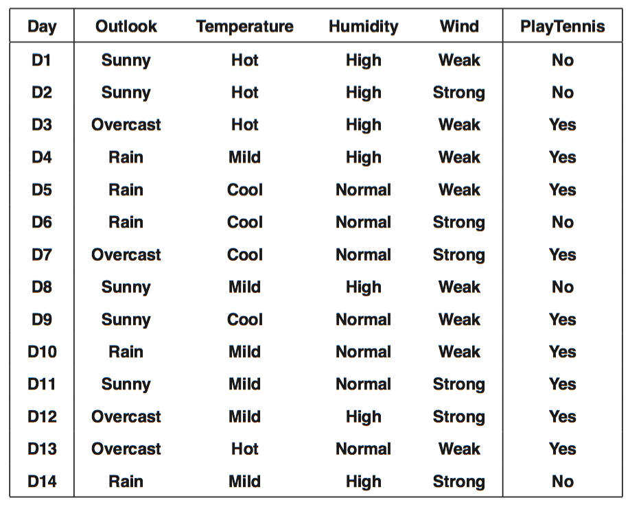
Albero:

Come si può notare, nell'albero ogni nodo corrisponde ad un attributo e l'arco tra un nodo e l'altro corrisponde uno dei possibili valori, mentre le foglie dell'albero forniscono una classificazione.
Per classificare un'istanza si parte dalla radice e si scende verso le foglie, secondo quanto specificato dai test sugli attributi definiti dai nodi dell'albero.
Se si raggiunge una foglia l'etichetta ad essa associata rappresenta la classificazione.
Dato un albero di decisione, questo corrisponde ad una disgiunzione di congiunzioni.
Lo stesso albero può essere infatti rappresentato come:
(Outlook = Sunny and Humidity = Normal)
or
(Outlook = Overcast)
or
(Outlook = Rain and Wind = Weak)
L'algoritmo di apprendimento che costruisce l'albero di decisione trammite una procedura top down in stile divide et impera.
Questo algoritmo apprende l'albero di dicesione costruendolo con un approccio top-down. La costruzione inizia con la domanda "Quale attributo dovrebbe essere testato alla radice dell'albero?". Per scegliere l'attributo vengono valutati tutti i possibili candidati utilizzando un test statistico per valutare quando bene il singolo attributo classifica il training set.
Viene selezionato il miglior attributo e utilizzato come test alla radice dell'albero. Vengono poi creati tanti figli quanti sono i possibili valori dell'attributo e gli esempi del training set vengono partizionati tra i vari figli, in modo che il loro valore per quell'attributo corrisponda con il valore del nodo.
Questo processo vienei ripetuto per ognuno dei nodi creati fino a che non vengono esaminati tutti gli esempi.
Più formalmente, dato un training set Tr e un insieme di attributi A, algoritmo è definito come:
Quando una partizione risulta vuota, vuol dire che non esistono esempi nel training set per i quali il valore dell'attributo selezionato è uguale a quel dato valore.
T = {D1, ..., D14}
A = {Outlook, Temperature, Humidity, Wind}
a = Outlook
(Outlook)
/ | \
sunny overcast rain
/ | \
(T_Overlook = Sunny
A = Temp, Hum, Wind})
Al secondo passo mi ritrovo scelgo a = Humidity, ottenendo:
(Outlook)
/ | \
sunny overcast rain
/ | \
(Humidity)
/ \
High Normal
/ \
No Si
In questo caso i figli vengono marcati con un valore quando si è nel caso in cui tutti gli esempi della partizione hanno lo stesso valore target.
Si prosegue finché l'albero non è completo
Nell'esempio precedente è stato scelto un attributo a caso, ma nel caso pratico questo non conviene.
Come viene scelto l'ottimo dipende da algoritmo ad algoritmo, nel caso di ID3 vengono utilizzati i concetti di entropia e guadagno entropico.
E(S) = -p-log2(p-) -p+log2(p+)
Dove p- e p+ rappresentano la proporzione degli esempi della di una classe e dell'altra (si assume che ci siano solo due classi) all'interno dell'insieme S.
L'entropia misura il grado di purezza degll'insieme degli esempi.
Nel caso ci siano più valori l'entropia si calcola come
- ∑v (pvlog2(pv))
ID3 sceglie come attributo a, quello che massimizza il guadagno entropico.
G(S,a) = E(S) - ∑v ϵ V(a) (E(Sa = v) |Sa=v| / |S|)
Il guadagno misura la riduzione aspettata dell'entropia nel partizionare i dati utilizzando a.
L'entropia attesa è descritta dal secondo termine ed è semplicemente la sommatoria delle entropie di tutti i sottoinsiemi di S, pesata secondo il numero di esempi che appartengono al sottoinsieme di S.
Problema: L'utilizzo del guadagno entropico favorisce troppo gli attributi che possono assumere tanti valori diversi, ad esempio l'attributo Data. Seguendo l'esempio della data, segliere quell'attributo porta ad ottenere tante partizioni, ognuna di pochi elementi e che non forniscono informazioni utili.
GainRatio(S, a) = G(S, a) / SI(S,a)
Dove SI rappresenta la split information, un valore che misura quanti e quanto uniformi sono i sottoinsiemi generati dall'attributo a a partire dall'insieme S.
SI(S,a) = - ∑v ϵ V(a)( log2(|Sa = v| / |S|) |Sa = v| / |S| )
E corrispone all'entropia di S dati i possibili valori di a.
GainRatio non risolve tutti i problemi, infatti può succedere che attributi significativi e che possono assumere tanti valori, vengano svantaggiati rispetto al altri.
Un'altra idea può essere quella di calcolare il Guadagno per ogni attributo e fare la media dei valori trovati, per poi andare a scegliere, tra gli attributi con Guadagno sopra la media, l'attributo che ha GainRatio maggiore.
Con candidate elimination c'era l'incompletezza delle ipotesi ma la ricerca all'interno dello spazio è esaustiva, mentre negli alberi di decisione, c'è la completezza per quanto riguarda lo spazio delle ipotesi ma la ricerca non è completa in quanto vengono effettuate scelte greedy.
Un altro bias induttivo è che tutti gli attributi che producono un guadagno entropico alto si trovano vicino alla radice.
Uno o più attributi hanno dei valori continui, escluso il target che rimane binario o con un numero discreto di possibili valori.
La soluzione è quella di trasformare dinamicamente un attributo continuo A nell'attributo booleano Ac in modo che sia true se il valore di A è minore di una certa soglia c.
Il tutto sta ne scegliere la soglia c migliore cioè che corrispone al massimo guadagno entropico.
Si è dimostrato che il valore ottimo di soglia si localizza nel valore di mezzo tra due valori a cui corrisponde un target diverso.
Da notare che con ID3 un attributo può essere utilizzato soltanto una volta, in questo caso però è possibile riutilizzare l'attributo con un c diverso.
In alcune situazioni andare a verificare il valore assunto da un attributo potrebbe avere un costo.
Può essere preferibile quindi testare prima gli attributi meno costosi, serve quindi un criterio per la selezione degll'attributo ottimo che tiene conto dei costi.
Alcuni criteri sono:
Diagnosi medica (2Guadagno(S,A)-1)/(Costo(A)+1)w con w tra 0 e 1 (più vicino a 1 è w più peso si da al costo)
Percezione robotica: (Guadagno2(S,A))/Costo(A)
In alcuni casi si vuole classificare qualcosa che non ha tutti i dati per gli attributi.
Questi casi possono essere trattati in vari modi diversi:
Cioè l'ipotesi è molto accurata sui valori di training, ma sui valori di test risulta meno accurata.
All'aumentare della complessità dell'albero creato, l'accuratezza dell'abero sui dati di trainging aumenta, ma una volta provata con i dati di test, l'accuratezza cala drastricamente.
in fact it can lead to difficulties when there is noise in the data,
or when the number of training examples is too small to produce a
representative sample of the true target function
Si è osservato che fino ad un certo livello di complessità l'accuratezza in training è molto simile all'accuratezza in test, è quindi importante potare gli albteri complessi.
Ci sono però due problemi:
Per quanto riugarda il problema (2) ci sono varie soluzioni:
Effettuare il pruning di un nodo consiste nel rimuovere il sotto albero che ha origine in quel nodo, trasformando il nodo potato in una foglia e assegnandogli come valore la classificazione più comune tra gli esempi di training associati a quel nodo.
I nodi vengono rimossi solamente se le prestazione dell'albero potato non peggiorano rispetto la versione originale, confrontate sul validation set.
Al sottoalbero radicato in n si sotistuisce la foglia con etichetta uguale alla classe più frequente nell'insieme degli esempi associati al nodo n.
Ri è del tipo:
IF (Attri1 = vi1) ⋀ ... ⋀ (Attrik = vik) THEN labelfi
La classificazione di una nuova istanza a partire da parte delle regole ordinate avviene seguendo l'ordine stabilito per le regole:
Due approcci principali per studiarle:
Durante il corso ci concentreremo sul secondo approccio applicato al contesto dell'apprendimento supervisionato.
Quando si hanno tanti input numerici e discreti e si vuole effettuare una classificazione o regressione.
I dati di input possono anche contenere del rumore e la forma della funzione target è totalmente sconosciuta.
Il risultato finale non deve essere compreso da un esperto umano, il funzionamento della rete è una black-box.
Tipicamente vengono utilizzate quando non ci sono conoscenze a priori nel dominio.

Il cervello umano è sostituito da circa 1010 neuroni fortemente interconnessi tra loro (da 104 a 105 connessioni), il tempo di risposta di un neurone è di circa 0.001 secondi.
Considerando che per riconoscere il contenuto di una scena un unmano impiega circa 0.1 secondi, ne segue che il cervello umano sfrutta pesantemente il calcolo parallelo: infatti, in questo caso, non pul effettuare più di 100 calcoli seriali.
Questo funzionamento va in contrasto con quello attuale dei nostri processori, i quali ottenogno ottime prestazioni nelle operazioni seriali ma sono in difficoltà con il calcolo parallelo.
Una rete neurale artificiale è un sistema costituito da unità interconnesse che calcolano funzioni numeriche, ci sono vari tipi di unità:
Sulle connessioni tra le varie unità sono definiti dei pesi che vengono definiti dall'algoritmo di apprendimeno.
Ci sono due modi per replicare un neurone:
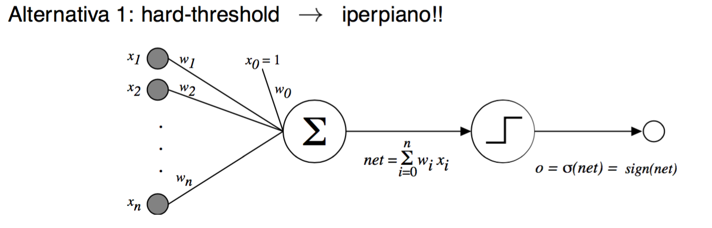
L'idea è quella di avere un vettore di input che rappresenta i nodi di ingresso da ognuno dei quali arriva un segnale xi. A ogni segnale è associato un peso wi che lo amplifica, tutti questi pesi vengono definiti dall'algoritmo di apprendimento.
Il neurone è poi composto da altri due elementi: il primo che effettua una sommatoria, detta net di tutti i segnali d'ingresso moltiplicati per il loro peso, mentre il secondo utilizza il risultato del primo e calcola una funzione gradino, il cui output è 1 o -1 in base al segno di net.
Alcune precisazioni:
Si può dimostrare che questo tipo di neurone definisce un iperpiano. Questo perché la somamtoria a partire da i=1 può essere vista come un wTx +w0 ed concide con la definizione di iperpiano.
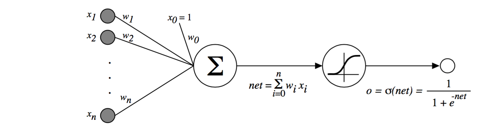
Utilizza la stessa sommatoria net alla quale viene applicata la funzione σ.
σ(z) = 1 / (1 + e-z)
La funzione è continua e compresa tra 0 e 1.
Il vantaggio fondamentale di σ è che si tratta di una funzione derivabile e quindi permette di utilizzare l'algoritmo di back propagation. Un algoritmo che permette di fare apprendimento all'indietro in grado di funzionare anche su reti composte da più livelli.
Un'altra caratteristica interessante di questa funzione è che la sua derivata può essere espressa come una funzione dei valori di input. Cioè:
∂σ / ∂z = σ(z)(1-σ(z))
Questa proprietà tornerà utile quando sarà applicato l'algortimo di back propagation.
Infine, il neurone sigmoidale può utilizza altre funzioni al posto di 1 / (1 + e-z), come la tangente iperbolica.
È una rete neurale composta da un singolo neurone con Hard Threshold che viene utilizzata per rappresentare un iperpiano.
L'algoritmo di apprendimento per questa rete cerca dei valori per i vari pesi wi in modo da apprendere la funzione target. Per apprendere i coefficenti corretti vengono utilizzati gli esempi del training set.
Ad esempio Percepton può implementare l'operatore or con gli ingressi y ∈ {0,1}n+1 (vettori rappresentanti stringhe binarie), si possono usare come pesi w'0 = -0.5 e w'i = 1 per i=1..n.
In modo simile può essere implementato anche l'operatore and con w'0 = -n+0.5 e w'i = 1 per i = 1..n.
Si può anche realizzare l'operatore not con una singola connessione e con un unico peso negativo.
Un problema che il perceptron non riesce a risolvere è la xor, questo perché si tratta di una funzione non linearmente separabili.
Si può far apprendere a Perceptron tutte le funzioni linearmente separabili con un algoritmo che è garantito che termini.
Tuttavia se la funzione da apprendere non è linearmente separabile l'algoritmo non converge.
Dato un insieme di apprendimento Tr = {(x-,t), dove t ∈ {-1,+1}}.
Cioè per ogni esempio nel training set va a controllare il segno del prodotto scalare tra x e i pesi, se questo non coincide con il valore di training è necessario adattare w in modo che anche per x venga calcolato il valore corretto.
In questo modo si riesce ad apprendere una funzione che per costruzione non commette nessun errore nel training set.
Piccola precisazione, x e w sono dei vettori.
Perceptron va bene ma non riesce ad apprendere la XOR perché non è linearmente separabile.
L'idea è quindi quella di combinare più Perceptron tra loro, in modo che riescano ad apprendere una qualsiasi funzione boolena.
Il problema ora diventa come effettuare l'apprendimento con una rete di Perceptron, dal momento che non è più triviale come assegnare dei pesi alle unità nascoste. Una possibile soluzione è quella di rendere il singolo neurone derivabile e sfruttare la tecnica di Discesa del Gradiente per apprendere i pesi "giusti".
Richiami di analisi: il segno della derivata di una funzione determina se la funzione è crescente o decrescente. Inoltre se la derviata vale 0, la funzione in quel punto ha un minimo o un massimo locale.
Si può quindi seguire il segno della derivata prima di una funzione per raggiungere un massimo o minimo locale.
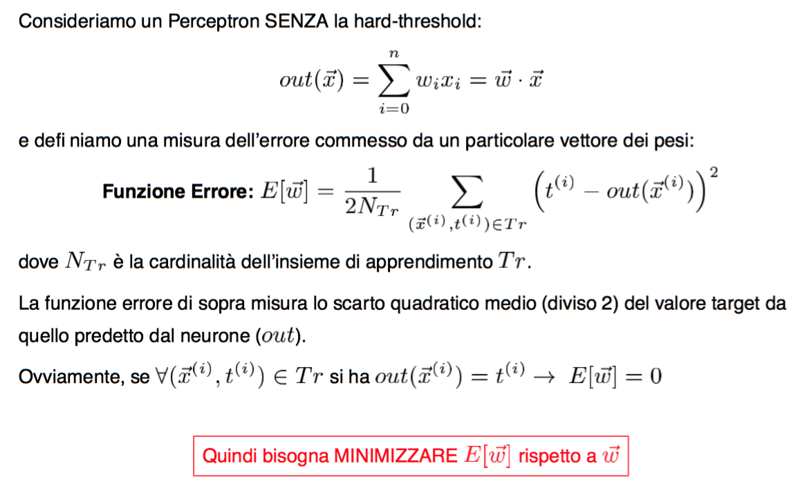
La funzione obiettivo da minimizzare è la funzione errore, la quale rappresenta lo scarto quadratico medio del valore target predetto dal neurone (funzione out).
Dal momento che si tratta di una funzione derivabile è possibile utilizzare la discessa di gradiente per raggiungere un minimo.

Il valore -η è lo step con il quale mi sposto e prende il nome di learn rate.
Per calcolare lo spostamento rispetto ad ogni wi per minimizzare la funzione obiettivo, vado a calcolare la derivata. Una volta calcolati tutti i Δwi posso andare a sommarli tra loro e successivamente aggiornare il vettore w.
La seguente serie di calcoli mostra come è possibile calcolare i Δwi per tutti gli esempi presenti nel training set. Viene usato out(d) per indicare il valore calcolato dalla rete per il d-esimo esempio del training set e t(d) per indicare il corretto valore della funzione target per lo stesso esempio.
In questo caso viene sempre considerata una rete di perceptron senza hard-treshold e senza sigmoide.

Δwi rappresenta lo spostamento dal wi iniziale.
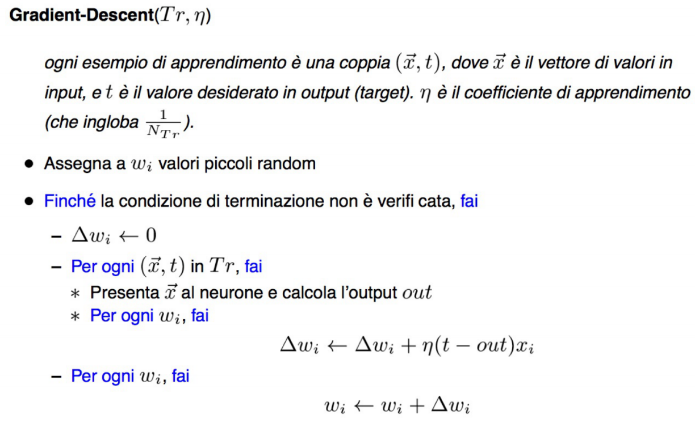
In pratica prima viene esaminato tutti il training set per aggiornare i vari Δwi, una volta finito di esaminare il training set si aggiornano i wi e si ripete fino a che non si verifica una condizione di stop.
Possono essere utilizzate varie condizioni di stop:
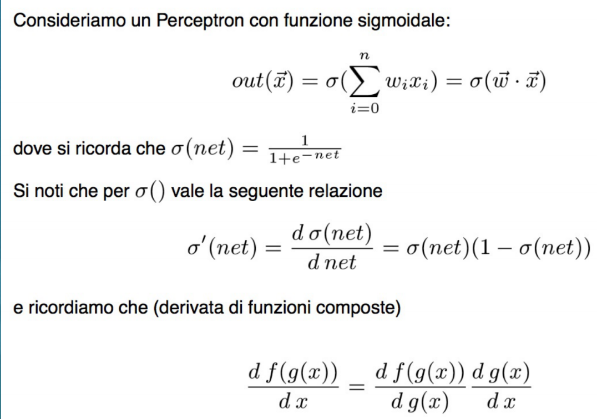
In questo caso si può utilizzare lo stesso algoritmo di apprendimento visto in precedenza, cambia però come vengono aggiornati i Δwi, dal momento che bisona tenere in considerazione la derivata della funzione sigmoidale.
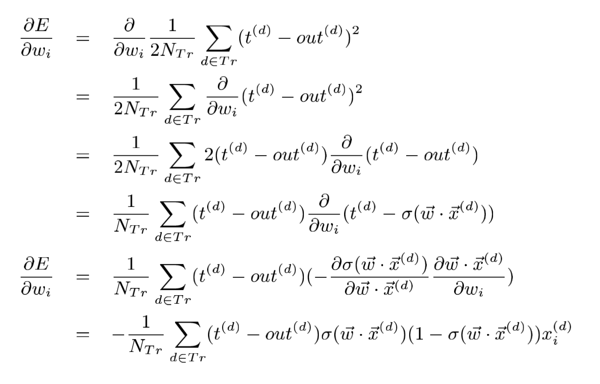
Nonostate la formula sembri molto minacciosa, i Δwi sono uguali a -η∂E / ∂wi, cioè il learn rate moltiplicato per la derivata appena calcolata.


E rappresenta l'errore quadratico medio di tutte le unità di output.
Calcoliamo i pesi per le unità di output, considerando i livelli nascosti come se fossero degli ingressi.
I wi adesso diventano Δwk,j perché i pesi vengono calcolati per ogni collegamento da un'unità nascosta j all'unità di output k.
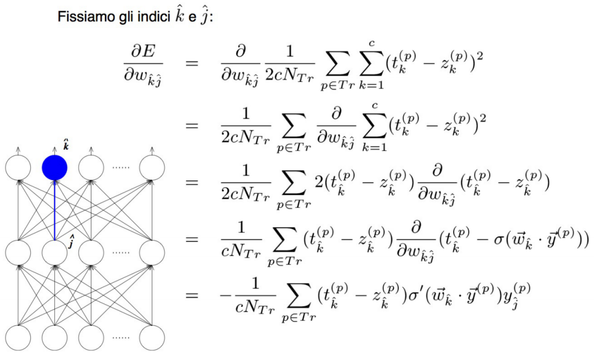
Nel secondo passo sono state fatte due operazioni, prima viene tolta la sommatoria, perché quando viene fatta la derivata della sommatoria c'è un solo elemento diverso da ed è quello di indice k^=k.
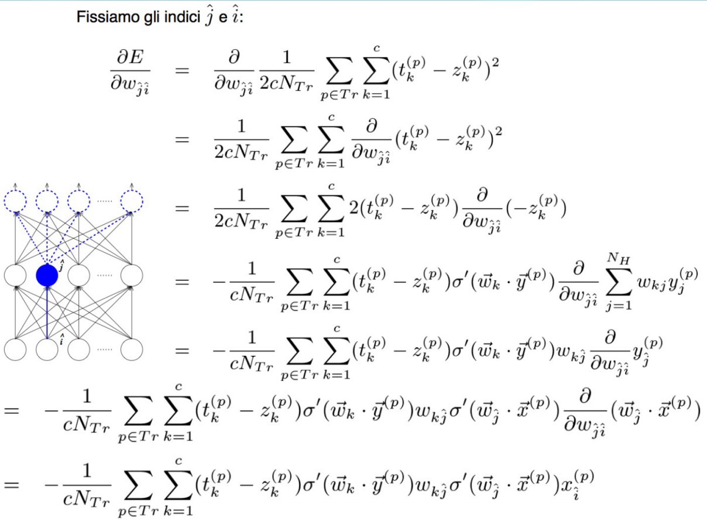
L'algoritmo di apprendimento lavora in due fasi: nella prima fase, detta feed forward, viene forinto in input alla rete un esempio del training set, in modo che questa possa provare a calcolare la funzione target per l'esempio. Una volta calcolata si passa alla fase di backward progragation, nella quale si aggiornarno i coefficenti delle unità di output e delle unità nascoste in base alla correttezza o meno della predizione. In questo caso l'apprendimento avviene a ritroso, prima vengono aggiornati i coefficenti delle unità di output e poi quelli dei livelli nascosti.

Il passo 2 dell'algoritmo rappresenta il calcolo della differenza tra l'output atteso e quello ottenuto, questo viene poi utilizzato per aggiornare a ritroso i valori dei nodi interni (passo 3).
L'algoritmo prende il nome di back propagation stocastico perché il valore dei Δwi viene aggiornato subito dopo aver valutato un esempio x e non solamente dopo aver valutato tutti gli esempi del training set.
Le possibili condizioni di terminazione sono le stesse che si hanno quando c'è un solo neurone.
L'apprendimento supervisionato può essere visto come una serie di fasi:
Per rappresensentare gli oggetti con i quali lavora un algoritmo di apprendimento è possibile utilizzare varie rappresentazioni:
Nel corso ci concentriamo principamente sui vettori.
Per ogni oggetto possiamo avere a disponsizione delle feature categoriche, che rappresentano delle caratteristiche nominali dell'oggetto (marca di un auto, paese di origine), alcune di queste possono essere anche ordinali, cioè che impongno un ordine tra gli elementi ma la distanza tra un valore e un altro non è quantificabile, come per esempio i gradi militari: soldato, caporale, ecc.
Un altro tipo di feature sono le feature quantitative, cioè delle caratteristiche che sono enumerabili, come il livello di apprezzamento di un prodotto, oppure ratio, ovvero dei numeri reali, come il peso di una persona.
Le feature categoriche si possono mappare in un vettore con tante componenti quanti sono i possibili valori della variabile (one-hot).
Ad esempio per raooresentare una macchina con le seguenti caratteristiche è possibile utilizzare un vettore che lo codifica.
- Marca: Fiat [c1], Toyota [c2], Ford [c3]
- Colore: Bianco [c4], Nero [c5], Rosso [c6],
- Tipo: Economica [c7], Sportiva [c8]
La macchina (Toyota, Rossa, Economica) viene quindi rappresentata con un vettore
[0,1,0,0,0,1,1,0]
Tipicamente le feature continue vengono trasformate per ottenere dei valori comparabili con le altre feature.
Per ottenere ciò è possibile applicare una delle seguenti traformazioni:
Dove:
K-Nearest-Neighbors: è un algoritmo di classificazione in cui un esempio di test è classificato come la classe di maggioranza dei sui k-vicini nel training set.
Si vanno a scegliere i k elementi più vicini all'elemento che si vuole classificare e viene scelta come classe quella della maggioranza dei suoi k-vicini.
Volendo si può normalizzare per perdere volontariamente delle informazioni, in modo da togliere del rumore.
Trattandosi di vettori la distanza deve essere misurata come:
||x - y||2 = ||x||2 + ||y||2 - 2xTy
Per semplificare i calcoli, si può tenere in considerazione che se i due vettori hanno la stessa norma, la loro distanza è uguale alla similiarità indotta dal prodotto scalare:
||x - y||2 = const - 2xTy
I parametri sono i valori che influiscono nell'apprendimento, come i vari pesi w. Mentre, gli iper-parametri sono tutti gli altri parametri che non influiscono con l'apprendimento, come il numero di unità nascoste per le reti neurali o il k per l'algoritmo k-nn.
La fase in cui questi valori vengono scelti prende il nome di model selection e come valori si cerca di scegliere il migliore per il task.
Per valutare le predizioni di uno stimatore vengono utilizzate due misure:
b = E[𝜃'] - 𝜃
v = E[(𝜃' - E[𝜃'])2]
Nelle formule sopra riportate 𝜃 rappresenta il valore corretto e 𝜃' rappresenta il valore prodotto dallo stimatore.
Una strategia per ricercare il valore ottimo per un iper-parametro è quella dell'hold out, ovvero per ogni possibile valore un valore per l'iper-parametro si fa eseguire l'apprendimento allo stimatore su un sotto-insieme del training set, dopodiché si confrontano i risultati ottenuti effettuando delle predizioni su un insieme di validazione, ovviamente viene scelto il valore dell'iper-parametro che porta ad ottenere le predizioni migliori.
Più formalmente:
In questo modo riesco a calcolare l'accuracy per ogni valore del iper-parametro e di conseguenza posso scegliere il valore migliore.
Con l'accuracy si intende la proporzione di predizione corrette effettuate dallo stimatore.
Una volta scelto il valore, tipicamente si rieffettua l'apprendimento utilizzando il training set completo.
Alternativa all'hold-out che permette di valutare in modo più preciso la bontà dei possibili valori per un iper-parametro.
L'insieme di apprendimento viene partizionato in k parti disgiunte. Viene poi eseguito l'apprendimento utilizzando k-1 partizioni e utilizzando la restante partizione per fare validazione. L'intero processo di apprendimento viene ripetuto quindi k volte, utilizzando ogni volta una partizione per la validazione diversa.
Così facendo per un singolo valore di un iper-parametro si ottengono k valori di accuracy e si può utilizzare la media di queti valori per ottenere una stima dell'accuracy migliore.
Il tutto viene poi ripetuto per ogni possibile valore dell'iper-parametro.
Il valore di k influisce la dimensione del training set, utilizzando un k piccolo, si ottiene un training set più piccolo, quindi il bias induttivo aumenta e la varianza della stima ottenuta diminuisce.
Viceversa, se k è grande, il training set è più grande e si ottiene un minor bias induttivo.
Tipicamente si usa k=5 o k=10.
Quando nel training set c'è una classe che domanina sulle altre, l'accuracy non è più una stima adatta, vengono quindi utilizzate altre misure quali: precision, recall e F-Measure.
π = true positive / (true positive + false positive)
p = true positive / (true positive + false negative)
Precioson: quanti tra quelli che ho detto essere positivi sono effettivamente positivi.
Un'altra misura più accurata è la F-measure che combina tra loro precision e recall:
F1 = 2 πp / (π + p)
F𝜷 = (1+𝜷2)πp / (𝜷2π + p)
Richiamo: l'errore ideale, cioè quello commesso su esempi che non sono stati valutati durante l'apprendimento, può essere visto come composto da due termini, un errore empirico sui dati e la VC-Confidence.
L'algoritmo di minimizzazione dei rischi cerca lo spazio delle impotesi che va a minimizzare la VC-Confidence.
Sappiamo che la VC dimension di un iperpiano nello spazio m è m+1.
Considerando il caso in cui gli esempi sono linearmente separabili si può definire il margine r come la distanza minima tra l'iperpiano e l'esempio più vicino.
L'iperpiano che ha un margine maggiore viene detto ottimo e massimizza la minima distanza con gli esempi.


Vincoli e funzione di costo sono convessi perché i vincoli sono lineare e il costo è una parabola.


Quindi i vettori di supporto sono gli esempi di training che si trovano in uno dei due iperpiani margine.
Nelle precedenti puntate:
Tutto quello visto finora funziona se i dati sono linearmente separabili.
Nel caso questi non lo siano è necessario aggiungere una nuova variabile per ogni elemento presente nel training set.
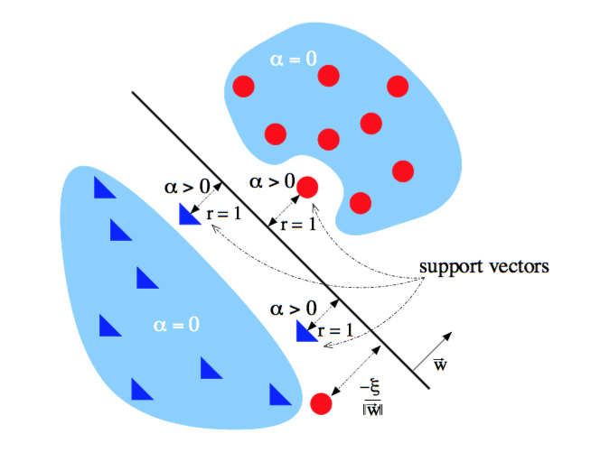
Vengono quindi definite delle psi_i che rappresenta la distanza del elemento i-esimo dal margine entro il quale dovrebbe trovarsi.
L'idea è quindi quella di andare a sommare alla funzione costo, un altro quoziente della sommatoria di tutti i psi_i dei vari esempi presenti nel training set.
Il valore C del coefficente che va a moltiplicare la sommatoria degli psi_i può essere scelta con le tecniche di model selection.
In pratica vengono penalizzati (aumentato il costo) gli esempi che non rispettano il margine.
La funzione psi_i si comprota anche come upper buond per la rappresentazione dell'esempoio i-esimo del trainging set.
Sommando le psi_i di tutti gli esempi è maggiore o ugale al numero di errrori analizzzando tutto il trainingset.
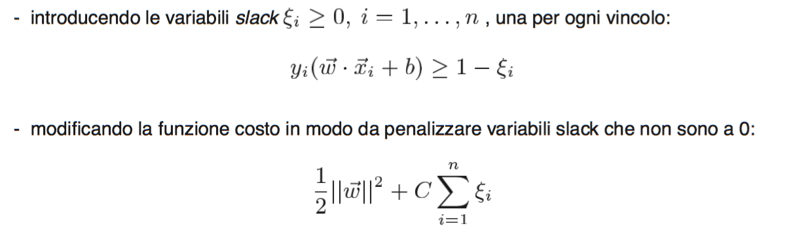
Allo stesso modo si può trovare il problema duale (non vengono visti i conti)
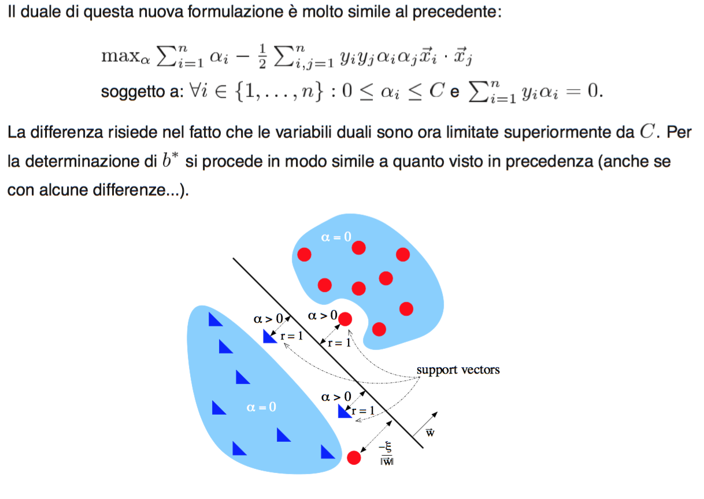
Da notare che nel caso separabile i vettori di supporto stanno su uno dei due iperpiani margini.
Nel caso di dati non linearmente separabili o si trovano in un ipermpiano margine oppire uno psi_i negativo.
Da notare che le psi_i sono variabili del problema primale e che quindi non compaiono nel problema duale.
Questa strategia per esempi non linearmente separabili non sempre garantisce buone prestazioni perché un iperpiano pul solo rappresentare dicotomie dello spazio delle istanze.
Per questo motivio, quando gli esempi non sono lineramente separabili su usa una strategia divisa in due passi:
Perché dovrei farlo?
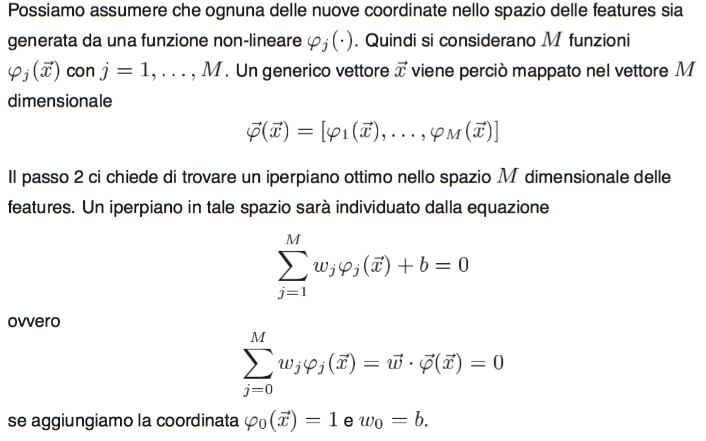
In un modo simile a come accade con il perceptron.
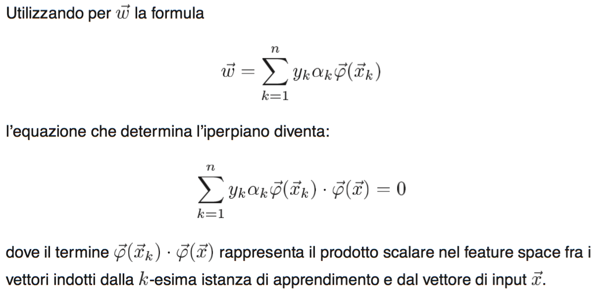

La cosa bella è che si può "inventare" una funzione K che ci permette di calcolare agevolmente il prododdo scalare.

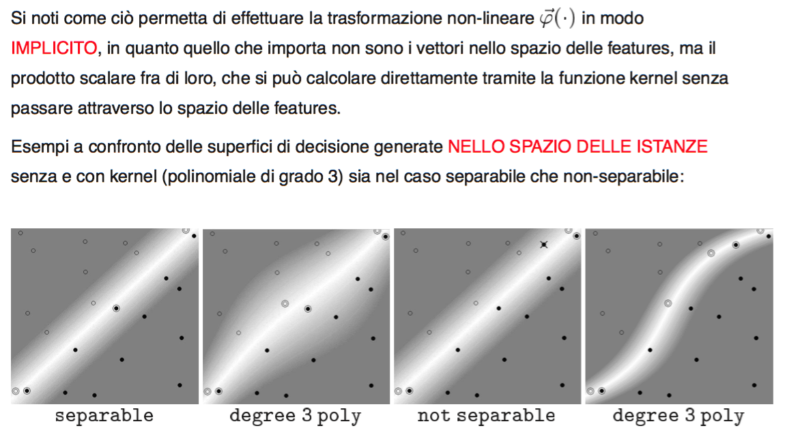
Quando si considera il problema di approssimazione di funzioni a valori reali (regressione) si utilizza l'ϵ-tubo: output che differiscono dai valori di target per più di ϵ in valore assolunto vengono penalizzati linearmente, altrimenti non vengono considerati errori. In partica aggiungo un intervallo di tolleranza al iperpiano che partiziona lo spazio.

che trasformata in duale diventa
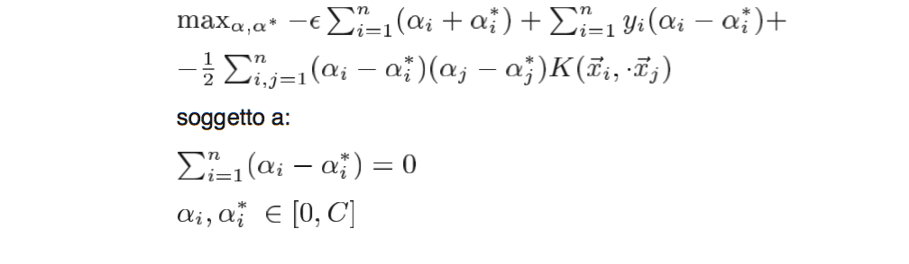
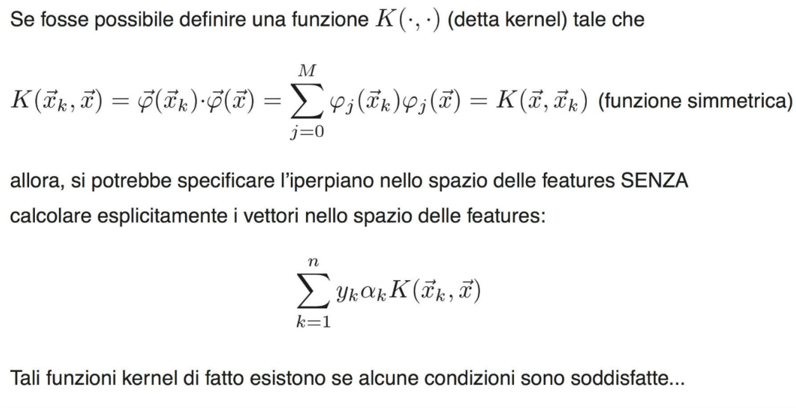
In pratica la funzione Kernel serve per calcolare un prodotto scalare in uno spazio a più dimensioni.
Le funzioni Kernel permettono di andare a definire una serie di metodi per l'apprendimento supervisionato.
Ad esempio data una serie di oggetti S = {x1,x2,.., xn} può essere rappresentata con i Kernel come una funzione
k: X x X -> R
Cioè una funzione che confronta le varie coppie della serie e le valuta utilizzando un numero reale.
Il dataset S può essere quindi rappresentato con una matrice simmetrica Ki,j = k(xi,xj). Inoltre, dal momento che la funzione k rappresenta un prodotto scalare su un certo spazio, la matrice k è semi-definita positiva (questa realzione vale in se e solo se).
aggiungi immagine cone definzione di matrice definita semi positva
La rappresentazione dei dati con matrici kernel ha come vantaggi:
Molti metodi kernel, comprese le SVM possono essere interpretati come algortimi che, dato un insieme di oggetti S risolvono un problema di minimo di una certa funzione L associata al rischio empirico.
immagine 1
I metodi Kernel possono essere rappresentatni da 5 fasi modulari
sostituire con l'immagine
Ogni algoritmo per i dati vettoriali che può essere espresso in termini del prodotto scalre tra vettori può essere implicitamente eseguito nello spazio delle feature associatio ad un determinato kernel, rimpiazzando i prodotti scalari con valutazioni kernel.
Ad esempio K-NN può utilizzare i kernel per calcolare la distanza tra due vettori.
Per vettori si possono utilizzare come kernel:
Il fatto che il kernel sia sempre maggiore di 0, implica che i due vettori sono nello stesso ottante (tra i due vettori c'è un angolo minore di 90°).
Se k(x,x) è uguale a 1 si dice che il kernel è normalizzato, ovvero tutti i vettori del feature space sono normalizzati. La matrice kernel definita con un kernel normalizzato ha tutti 1 nella diagonale.
È sempre possibile normalizzare un kernel k(x,z) dividendolo per la radice quandrata di k(x,x) * k(z,z)
Come kernel per le stringhe si possono contare tutte le sequenze di una cerca lunghezza e costruire un vettore delle feature delle occorrenze, questo si fa con le tecniche di programmazione dinamica.
Per gli alberi si possono utilizzare delle tecniche analoghe, considerando i sotto alberi in comune.
C'è un libro Kernel Methods for Pattern Analysis che spiega molto bene questa tecnica.
Una combinazione lineare positiva di kernel è anchessa un kernel, quindi
k(x,z) = ak1(x,z) + bk2(x,z)
Se quna sequenza di kernel converge puntualmente ad una funzione f, allora anche f è un kernel.
Ma c'è di più, i kernel possono essere tra loro composti per ottenere altri kernel.
Tutto questo si può andare a combinare per ottenere un kernel migliore. Dato un insieme S di kernel si può definire
k(x,z) = Sommatoria[S=1,Q]μsks(x,z)
Dove μ è un vettore tale che la loro sommatoria sia 1.
L'idea del Multiple Kernel Learning è di definire degli algoritmi per apprendere i valori di μs della combinazione che migliorino le prestazione di una SVM usando il kernel combinato, rispetto alle SVM ottenute utilizzando i kernel individuali.
Si tratta di algoritmi di apprendimento basati sulla probabilità e sul teorema di Bayes.
Tutto si basa sulla formula di Bayes.
P(h|D) = P(D|h)P(h)/ P(D)
L'obiettivo è quello di massimizzare P(h|D), sapendo P(D|h) che viene fornito dal supervisore e P(h) che viene appresa.
Nel massimizzare si può tralasciare il termine P(D) dal momento che è sempre costante.
hMAP = argmax[h ϵ H] P(h|D)P(D)
Si può inoltre assumere che tutte le ipotesi h abbiano la stessa ipotesi e nel mondo reale questa assunzione è tipicamente corretta, il problema di massimizzazione diventa:
hML = argmax[h ϵ H] P(h|D)
A pagina 158 del Mitchel c'è un esempio che mette in evidenza come le probabilità a priori influenzino il risultato.
Si assumono fissate le istanze x1 ... xn.
Si assume D essere lìinsieme dei valori derisderati D = {c(x1)...c(xn)}
Considerando tutte le ipotesi equiprobabili: 1/|H|
P(D|h) = 1 se h è consistente con gli elementi di D
P(D|h) = 0 altrimenti
Supponiamo inoltre che non sia presente del rumore.
In questo modo la probabilità P(h|D) si ottiene applicando la regola di Bayes, in particolare:
P(h|D) = 0 se h è non è consistente con D
P(h|D) = 1/VSH,D se h è consistente con D
Quindi se tutte le ipotesi h sono equiprobabili, allora qualsiasi ipotesi presente in H va bene con probabilità 1/VSH,D.
Se vengono cambiate le probabilità in modo che la probabilità di un'ipotesi più specifica sia più alta si ottiene che P(h|D) = P(h).
di = f(xi) + ei
dove Ei è l'errore che segue una probabilità gaussiana con media 0 di cui non si conosce la varianza.
ei = di - f(xi)
Però si vuole valutare l'errore come se al posto di f (che è sconsociuta) ci fosse h
ei = di - h(xi)
La probabilità di P(di|h), cioè che l'ipotesi h classifichi correttamente di segue la distribuzione guassiana di ei.
hML = argmax[h ϵ H] P(D|h)
hML = argmax[h ϵ H] (produttoria) P(di|h)
hML = argmax[h ϵ H] (produttoria) gaussiana di (di-h(xi))
Dal momento che la gaussiana contiene un'esponenziale, conviene utilizzare il logaritmo, tanto per il problema di massimizzazione è la stessa cosa.
fai screen delle slide per i conti
Segue quindi che
hML = argmin[h ϵ H] (sommatoria)(di-h(xi))2
Quindi per trovare l'ipotesi maximum likelihood è necessario minimizzare l'errore quadratico, sotto le ipotesi che la probabilità di ogni ipotesi è uniforme e assumendo che non ci sia rumore nei dati di training.
Finora abbiamo cercato l'ipotesi più probabile per i dati D (hMAP), ma dato un nuovo esempio, qual'è la classificazione più probabile? Non sempre
Supponiamo di avere P(h1|D)=0.4,P(h2|D)=0.3, P(h3|D)=0.3, data una nuova istanza x può succedere che h1(x) = (+) e h2(x) = h3(x) = (-). Quindi considerando le tre ipotesi, la classificazione più probabile è (-) e non (+).
Segue che la classificazione ottima di Bayes:
argmax[v ϵ vj] (sommatoria[h ϵ H]) P(vj | h)P(h)
Si va cioè a considerare tra tutte le ipotesi, pesate per la loro probabilità, e si considera come classe quella che compare più volte.
Dal momento che il classificatore ottimo di Bayes potrebbe essere molto costoso da calcolare se ci sono tante impotesi.
Si può tulizzare un'alternativa, scegliendo un ipotesi a caso, secondo la probabilità P(h|D) e utilizzando quell'ipotesi per classificare la nuova istanza, si ottiene un errore medio minore del doppio dell'errore medio che si ottiene utilizzando il classificatore ottimo.
E[erroreGibbs] <= E[erroreOttimoBayes]
Sempre assumendo probabilità uniforme per tutte le ipotesi del version space.
Il clustering è il processo che partiziona un'insieme di oggetti in sottogruppi in modo che gli oggetti di questi gruppi siano simili tra loro.
Questa tipologia di apprendimento prende il nome di apprendimento non supervisionato dal momento che non vengono calcolate delle etichette e non c'è un supervisore che fornisce delle etichette per i dati di apprendimento.
Tipicamente è composto da:
L'algoritmo di clustering calcola quindi una funzione di assegnamento 𝜸 che prende un elemento di D e lo assegna ad un gruppo {1..K}, in modo che non ci siano cluster vuoti e che venga soddisfatta la misura di similarità.
Come rappresentare i dati? Anche in questo caso è necessario utilizzare una rappresentazione nel vector space, normalizzando i dati. Inoltre, la rappresentazione influsce sulla misura di similarità.
Serve poi una notazione per la similarità/distanza.
C'è poi il problema di quanti cluster fare, se stabilirlo a priori o sceglierlo in base ai dati, evitando i casi triviali con cluster troppo grandi o troppo piccoli.
Tipicamente l'obiettivo di un problrma di clustering è quello di ottimizzare una funzione, definendo così un problema di ricerca tra i possibili assegnamenti.
Questi stati sono tanti, KN/K!. Il K! serve per togliere i cluster equivalenti, cioè quando la divisione degli elementi è identica ma cambia "l'etichetta" dei cluster a cui sono assegnati.
Tra l'altro ci sono dei problemi con i minimi locali per la funzione obiettivo, possono essercene tanti e possono impedire di raggiungere un minimo ottimo.
Ci sono dei criteri interni che vanno a misurare la similarità tra oggetti della stessa classe (intra-class) e tra oggetti di classi diversi (extra class), un buon clustering cerca quindi di massimizzare l'intra-class e di minimizzare l'extraclass.
La qualità misurata inoltre dipende da come vengono rappresentati i dati e dalla misura di similirità adottata.
Ci sono poi i criteri esterni, l'idea è quella di trovare quanto simile è il clustering trovato rispetto ad una divisione data a priori che prende il nome di ground truth.
Si assume quindi che i documenti possano essere partizionati in C classi che rappresentano la ground truth e che l'algortimo di clustering produca K cluster, ω1 ... ωK, ognuno contenente ni documenti.
La misura più semplice prende il nome di purity e rappresenta il rapporto medio tra i vari cluster che c'è tra la classe nominante in quel cluster e la dimensione del cluster.
Dalle slide: purity, the ratio between the dominant class in the cluster πi and the size of the cluster ωi
Altre misure si basano sull'entropia.
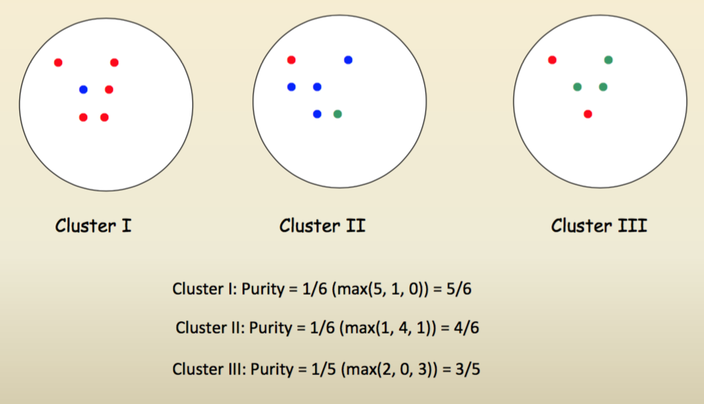
Nell'esempio il numero di cluster coincide con il numero di etichette è una cosa voluta, ma il gioco funziona anche con un numero diverso di cluster.
il core business della situazione è che le etichette per il clustering servono solo per VALUTARLO e non per fare apprendimento
È una misura di similiratà tra cluster, definita come il rapporto tra il numero di elementi che hanno la stessa classe ground e si trovano nello stesso cluster e con classi diverse in cluster diversi, sul numero totale di elementi.

Viene creata una tabella di contingenza, valutando per ogni coppia di punti, se hanno etichette diverse e se sono nello stesso cluster.
Probabilmente, ma non ne sono sicuro, i numeri della tabella corrispondo alle coppie che rispondo a quella categoria.
In questo modo ci si riconduce all'accuracy:
RI = A + D / A+B+C+D
Allo stesso modo si possono calcolare precision e recall
P = A/A+B
R = A/A+C
Ci sono due tipoleogie di algoritmi:
Questo algoritmo appartiene alla categoria degli algoritmi di partizionamento, ovvero vengono partizionati gli n documenti in K cluster, cercando di trovare un partizionamento ottimo secondo un determinato criterio.
Gli elementi da clusterizzare sono dei vettori con numeri reali e come criterio di partizionamento si utilizza la distanza vettoriale tra gli esempi e il centro del cluster.
Si cerca quindi di creare dei cluster che minimizzano il raggio della ipersfera che contiene gli esempi. (cluster centroidi)
La formula da minimizzare è la seguente:
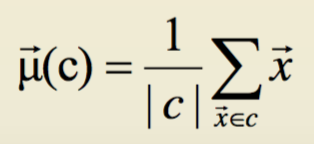
Questo algoritmo raggiunge un punto fisso.
Resta comunque il problema della scelta del numero di cluster da utilizzare.
quelli disivi utilizzano ricorsivamente k-means
Costruiscono un dendogramma a partire dagli oggetti, che vengono agglomerati tra loro quando vengono trovati simili. Si ripete il procedimento finché tutti gli oggetti non vengono agglomerati in un unico cluster.
Si parte quindi da N cluster, uno per ogni esempio e si agglomerano via via finché non si ottiene un unico cluster.
Ad ogni itereazione l'algoritmo può essere interroto per evitare di ottenere un unico cluster.
Le linee verticale di un dendogramma rappresentano un cluster, mentre quelle orizzontali rappresentano un punto di merge ovvero quando la similarità di due cluster è tale che vengono uniti in un unico cluster.

In base alla misura di similitarità l'operazione può essere monotona o meno, cioè se s1, ..., sk-1 sono combinazioni di similarità associate a delle operazioni di merge, allora s1 > ... > sk-1
Prima viene creato un cluster per ogni esempio, dopodiché viene eseguito via via il merge del clostes pair, ovvero dei due cluster più simili, fino a che non rimane un unico cluster. Lo storico dei merge crea il dendogramma.
Per scegliere il closest pair di cluster utilizzando vari criteri:
Viene quindi effettuato prima il merge dei cluster con similirità minima.
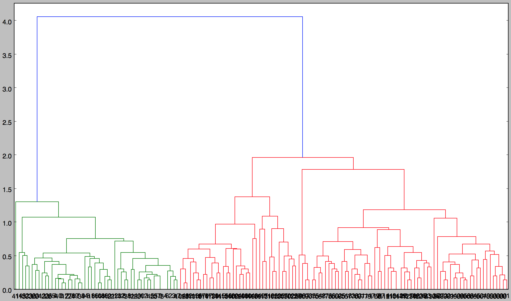
Sia single link che complete link garantiscono la monotonia, tuttavia con single link si tendono a creare dei cluster che sono delle catene, ovvero si ottengono dei dendogrammi sbilanciati, mentre il complete link tende a dare dei cluster sferici e più compatti, se però ci sono degli esempi outliers, ovvero che escono dalla distribuzione.
Il centroid link è carino ma non garantisce la monotonia.
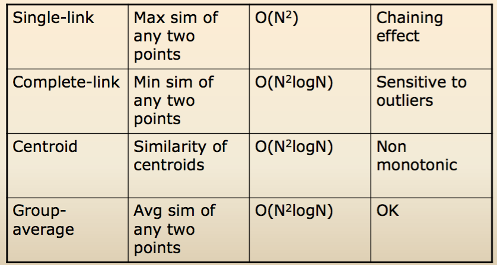
(le complessità della tabella indicano quante operazioni servono per scegliere il closest pair)
Gli attributi o variabili dovrebbero essere utilizzati solo se veramente utili (rilevanti) per la classificazione/predizione.
Avere meno attributi porta modelli di classificazione-predizione più compatti e che hanno bisogno di un numero minore di esempi di apprendimento per ottenere dei buoni risultati. Infatti, alcuni attributi possono introdurre del rumore sui dati.
Inoltre, modelli che usano pochi attributi sono più semplci da ocmprendere per un umano e sono più facilmente rappresentabili.
Feature selection: viene selezionato un sotto insieme "migliore" degli attributi tra quelli originali. Ad esempio possono essere scartate delle feature ridondanti o non rilevanti.
In questo modo si ottiene un interpretabilità migliore del modello predittivo, pertanto questo approccio è preferibile dove l'interpretabilità è più importante dell'accuratezza.
Feature extraction: si derivano nuovi attributi da quelli originali, per esempio, nuove features vengono ottenuteo come combinazione di attributi.
In questo modo si ottengono featuer più discriminative che portano ad avere un'accuratezza migliore, pertanto questo approccio è preferibile per applicazioni dove l'accuratezza è più importante dell'interpretabilità.
Ci sono tre famiglie principali di metodi:
Il metodo più importante si chiama Principal Component Analysis (PCA) e che consiste nella estrazione di un insieme di features non correlate linearmente.
Ovvero si mappano tutti gli esempi in poche dimensioni, queste dimensioni sono quelle che rappresentano meglio i dati del problema e allo stesso tempo diminuiscono il rumore sui dati.
Il numero di componenti principali è solitamente molto inferiore al numero di features originali.
L'idea è quella di apprendere la funzione o la matrice kernel:
Matrice kernel: matrice che per ogni coppia di dati di traning fornisce un valore che rappresenta il prodotto scalare della coppia.
L'idea è quella di prendere una funzione kernel come RBF e aggiungerci dei parametri.
k(x,z) = e^{-(x-z)^t M(x-z)}
e se M = 𝜸I si ottiene la versione classica di RBF
k(x,z) = e^{-𝜸||x-z||^2}
Un'altra scelta tipica è M = diag(𝜸1, ...,𝜸m), in questo caso le distanze vengono pesate dando maggiore importanza rispetto ad altre.
Con questo approccio vengono appresi anche i parametri 𝜸.
Effettua una feature extraction implicitamente nel featuer space.
KPCA o Kernel Principal Component Analisys va a calcolare implicitamente le proiezioni delle featuer principagli sugli autovettori (direzioni) principali.
Trattandosi di un caso non lineare, non è possibile andare a calcolare esplicitamente le componenti principali, ma viene utilizzata una forumale che permette di calcolarle in modo più agevole (implicitamente), un po' come accade con i margini delle SVM.
Trattandosi di un approccio trasduttivo, pertanto può essere utilizzato sole se si hanno ha disposizione tutte le componenti si riesce ad applicare. Se questo non è possibile è necessatio utilizzare delle tecniche dette out sample.
La matrice kernel, essendo definita positiva, può essere scritta in un modo compatto in funzione degli autovalori e autovettori.
Utilizzando una trasfomrazione degli autovalori si va ad agire implicitamente nello spazio delle feature. Intaffi, il kernel modificato può essere ottenuto utilizzando un po' di algebra, andando a moltiplicare la matrice degli autovettori con la radice quadrata della matrice degli autovalori.
L'idea è quella di combinare linearmente kernel diversi e definiti a priori, per poi apprendere la combinazione lineare di questi in modo da ottimizzare il kernel risultante.
Quando Facebook suggerisce gli amici, quando Amazon suggerisce dei prodotti e quando Youtube suggerisce dei video, viene utilizzato un sistema di raccomandazione.
C'è un sistema di esplict feedback che l'utente esprime in modo quantitativo:
Tutte queste valutazione sono intrusive e richiedono che l'interazione dell'utente.
Il sistema può sennò basarsi su implicit feedback:
In questo caso non c'è un responso esplicito delle preferenze dell'utente ma vengono usati dei valori impliciti, ad esempio si può presupporre che se l'utente sta molto in una pagina web, quella gli interessa. Il vantaggio del feedback implicito è che non viene richiesto direttamente all'utente, ma viene calcolato.
Ci sono 2 approcci principali per questi sistemi:
Il content base risulta migliore quando c'è poco storico (cold start problem), ovvero quando ho troppo poche informazioni relative alle interazioni tra l'utente e gli oggetti.
Il collaborative filtering va di gran lunga meglio del content base quando le informazioni implicite contenute sulle interazioni tra l'utente e gli oggetti diventa prevalente rispetto alle informazioni sugli oggetti. Questo perché permette di scoprire nuovi pattern molto più potenti rispetto a quelli che si possono definire sulle caratteristiche degli oggetti (ad esempio: suggerire canzoni dello stesso artista).
Matrice che ha come righe gli utenti e come colonne i vari item. Le celle della matrice contengono la valutazione dell'utente per il dato item.
Nei casi reali queste matrici sono molto sparse, tipicamente 0.1% dei valori presenti.
C'è poi un'altra sfiga, l'effetto long tail: per pochi utenti saranno presenti tanti rate e per pochi prodotti ci saranno tanti rate. Ovvero ci sono poche righe che hanno tanti elementi e tante righe che hanno pochi elementi. Lo stesso vale anche per le colonne.
Ci sono due problemi tipici:
Un esempio del secondo problema è Million Song Dataset, una sfida di kaggle che consistenva nel predirre quali canzoni avrebbe ascoltato degli utenti, avendo a disposizione lo storico degli ascolti di un gran numero di utenti e metà dello storico degli utenti per i queli si vuole fare la predizione.
R' = W V
- R' è la matrice approssimata
- W è una matrice NumeroUtenti x m
- V è una matrice m x NumeroItem
Nel caso del rating esplicito si può utilizzare RMSE (root mean square error), lo scarto quadratico medio degli errori commessi dall'approssimazione. Si tratta della misura più popolare per questi problemi.
Nel caso di top-N ci sono:
r_ui = x_uTy_i
L'algorimto di apprendimento tenta quindi di ottimizzare x e y in modo da minimizzare l'errore al quadrato sommato alla norma al quadrato di xu o yu.
formulone dalle slide
Il problema di minimizzazione non è convesso, quindi o xu o yi deve essere fissato.
L'approccio tipico è quello di inizializzare a caso yi e fissarlo, per poi minimizzare su xu, una volta raggiunto il minimo, si fissa xu e si minimizza per yi, e via così finché non si raggiunge la precisione desiderata.
Per stimare il rate dell'utente u si fa la media pesata dei rate dati dagli utenti che sono più simili all'utente u. C'è anche il reciproco per gli item.
formulona dalle slide
altre formulone dalla slide
La misura che si usa di più è la similirtà coseno (prima formula), dove per coseno si intende il coseno definito tra due vettori.
L'idea è di prendere un vettore per ogni utente di lunghezza pari alla cardinalità dell'insieme degli item e di mettere a 1 tutti gli elementi del vettore che corrispondo ad un item che è stato valutato.
In questo modo, facendo il prodotto scalare tra due vettori utenti, il risultato è il numero di elementi in comunque, in questo caso quanti item sono stati valutati dai due utenti. Mentre facendo la radice della norma di ...
Le formule delle slide ragionano ad insiemi, quanto detto sopra e fatto alla lavagna è espresso in vettori, il punto è che sono la stessa cosa.
Lo stesso ragionamento può essere fatto per gli item in funzione degli utenti.
Altro argomento correlato ai RS.
Si ha a disposizione un grafo, con tutti i nodi noti e alcuni archi, si vuole riuscre a predirre se ci saranno dei nuovi archi tra questi nodi in base alla struttura nota del grafo.
Tipicamente questo problema viene rimappato su un problema di ranking/classificazione.
Ogni possibile arco può essere rappresentato come un insieme di feature che possono essere usate per fare predizione con:
La differenza con un problema di raccomanazione sta nel come vengono calcolate le feature.